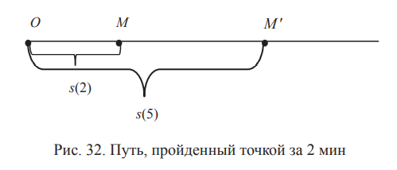

МАТЕМАТИЧЕСКИЙ АНАЛИЗ.
Пределы
функций. Производная функции
Продолжим рассматривать примеры вычисления пределов последовательностей.
4. Найти предел последовательности
Наибольшая степень в числителе и знаменателе — третья, поэтому поделим числитель и знаменатель на
n3. Получим
Воспользоваться теоремой 4 для вычисления предела отношения двух последовательностей невозможно, так как предел последовательности
стоящей в знаменателе, равен 0.
Рассмотрим последовательность
Предел этой последовательности равен 0:
Так как последовательность
yn — бесконечно малая, то
согласно теореме 1, бесконечно большая последовательность. Таким образом,
Правило. Если у общего члена последовательности степень числителя больше степени знаменателя, то последовательность
бесконечно большая.
Пределы функций
Рассмотрим функцию y = 2x + 1. Фиксируем точку x
0 = 0. Пусть
xn — некоторая последовательность, сходящаяся к x
0 при
n,
стремящемся к ∞. Рассмотрим, например, последовательность
Она сходится к 0
Подставив в функцию вместо x
xn, получим новую последовательность
Нас интересует, как ведет себя эта последовательность. Последовательность
yn сходится к 1 при
N, стремящемся к ∞(lim
n→∞ yn= 1).
Рассмотрим, как геометрически изображается связь между
последовательностями
xn и
yn (рис. 30).
Нас интересует, как ведет себя последовательность
yn, если последовательность
xn сходится к
x0.
Определение предела функции
Определение. Число
a называется пределом функции
y(
x) при
x, стремящемся к
x0,
если для любой последовательности
xn, удовлетворяющей условиям:
xn принадлежит области определения
X функции
y(
x),
xn ≠
x0
и lim
n→∞ xn =
x0,
соответствующая последовательность
yn =
y(
xn) сходится к
a. Это записывают так:
Теоремы о предельном переходе при выполнении арифметических операций над функциями
Пусть на множестве
X рассматриваются функции
y(
x) и
z(
x).
Пусть
x0 ∈
X и lim
n→∞ y(
x) =
a, lim
n→∞ z(
x) =
b. Тогда:
Теорема 1. Предел суммы (разности, произведения) двух функций при
x, стремящемся к
x0, равен сумме
(разности, произведению) пределов этих функций, т. е.
Теорема 2. Пусть b ≠ 0. Тогда
Примеры вычисления пределов функций
1. Найдем
Если мы попытаемся воспользоваться теоремой 2, то увидим, что при
x, стремящемся к 1, числитель и знаменатель дроби стремятся
к 0. Такая ситуация называется неопределенностью «ноль на ноль»
(
0
/
0
)
Пока теоремой 2 воспользоваться нельзя. Заметим, что
в числителе стоит разность квадратов. Используя формулу
получим
2. Найдем
Попытаемся использовать теорему 2. Найдем предел числителя:
Найдем предел знаменателя:
Имеем неопределенность типа «ноль на ноль».
В числителе дроби стоит квадратный трехчлен. Разложим его
на множители. Для этого найдем корни квадратного уравнения
Они равны
x1 = -1,
x2 = -2.
Напомним, что для квадратного уравнения
корни
x1,2 находятся по формуле
и разложение на множители записывается так:
Возвращаясь к нашему примеру, получим
Предел функции при
x, стремящемся к бесконечности (
x→∞), вычисляется так же, как для последовательности.
Производная функции
Приращение функции
Приращение функции, обозначаемое через Δ
y, показывает, на
сколько значение функции в точке
x0 + Δ
x отличается от значения функции в точке
x0(рис. 31).
Приращение аргумента — Δ
x, приращение функции — Δ
y =
y(
x0 + Δ
x) -
y(
x0)
Производная
Определение. Производной
y′(
x0) функции
y(
x) в точке
x0
называется предел отношения приращения функции к приращению аргумента, когда приращение аргумента стремится к нулю:
если этот предел существует. Итак,
Схема вычисления производной
1. Вычислить
y(
x0).
2. Вычислить
y(
x0+ Δ
x).
3. Найти приращение функции Δ
y =
y(
x0 + ∆
x) -
y(
x0).
4. Найти отношение
Δy
/
∆x
5. Найти предел отношения при ∆
x →0, т. е. производную
y′(
x0).
Найдем по определению производную функции
y =
x2.
Физический смысл производной
Пусть независимая переменная
t — это время. Рассматриваемая функция
s(
t) — путь,
пройденный точкой
M от начальной точки O за время
t (если
t измеряется, например, в минутах, то
s(3) — путь, пройденный точкой
M от начальной точки O за
3 мин,
s(5) — путь, пройденный точкой
M от начальной точки
O за 5 мин).
Тогда
s(
t + Δ
t) — путь, пройденный точкой
M от начальной точки O за время
t + Δ
t.
На рис. 32 путь
MM′ пройден за 2 мин и равен
s(3) −
s(5)

На рис. 33 путь
MM′ пройден за Δ
t мин и равен
Средняя скорость
ν на заданном отрезке пути определяется как отношение пути ко времени, за которое этот путь пройден.
Средняя скорость
ν на отрезке
MM′ на рис. 32 равна
s(5) - s(3)
/
2
на рис. 33 —
Δs
/
Δt
Если Δ
t → 0, то
M′ →
M и lim
Δt→0
Δs
/
Δt
=
s'(
t)— это
мгновенная скорость в точке
M Итак, производная пути по времени при
t =
t0
— это мгновенная скорость движения точки
M в моментem
t0.
Таким образом,
y′(
x0) — это скорость изменения функции
y(
x)
в точке
x0.
Таблица производных
Примеры использования формулы 1 из таблицы производных
Свойства производной